Municipality Entrance


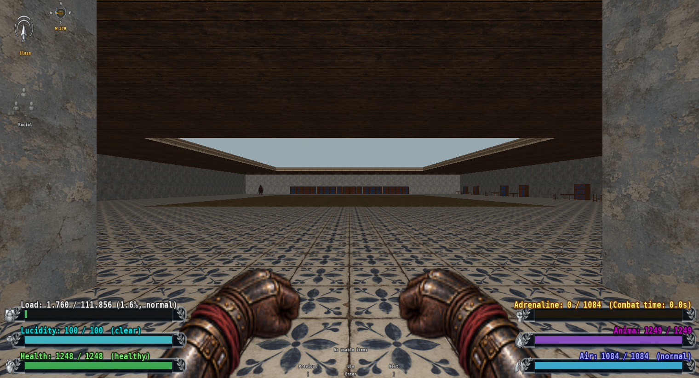
The proposal uses owned desks, chairs and book-filled shelves at their existing native scale: eight workstations in four open northern bays, plus a western archive row. The original entrance, courtyard, southern vendor wing and all map geometry remain intact.
The 42 fixed scene props have collision and bilingual labels. Their visible books are part of the existing mesh. They provide no new reading, resting, storage, item, ownership or trading function. The existing merchant remains the same service. These are open workspace bays, not newly enclosed rooms.
Both sides use the inherited remasters, joinery, sewer vaults and timber ceilings. The candidate adds only this municipal arrangement. Production defaults remain available in a separate fresh session. Exact style, historical appearance and placement await the final author review.
The three unchanged model sources total 3,672 vertices, 1,836 triangles, seven OBJ material sections and 236,392 bytes. The 42 instances total 42,120 source triangles. These counts are not a permanent art budget, visible triangle count, draw-call count or GPU memory measurement.
Two view phases passed 18 scene samples. Four route/save phases each passed 451 native movement steps, 42 collision probes and the existing merchant's Use interaction after preparing its persistent Box prerequisite. Same-option reload and a fresh default restoration passed. These diagnostic sessions do not establish ordinary campaign progression, all-body clearance or multiplayer acceptance.
Camera teleports, invulnerability and automatic menu dismissal support the gallery. Some control captures show a different Aira HUD value; its cause was not established and the images are not claimed to have identical gameplay state. The final review helper leaves native menus available.
Sources and placement rules · Geometry and cost audit · Routes and reload · Frame and tic tails · Image review


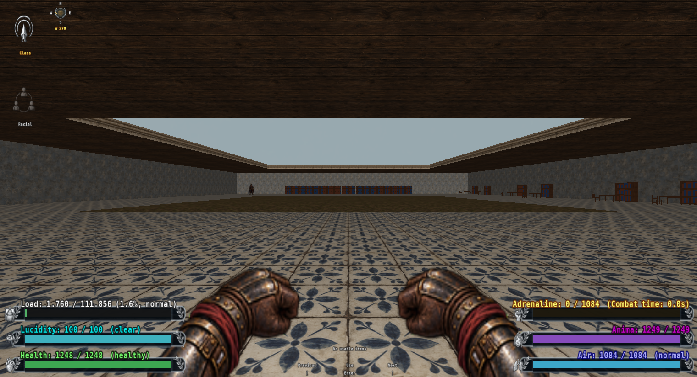
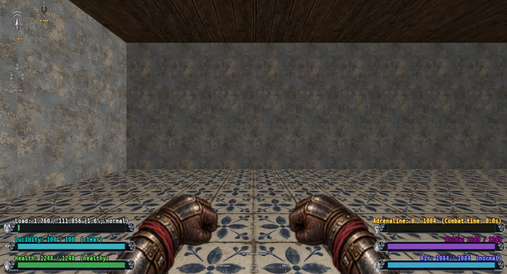
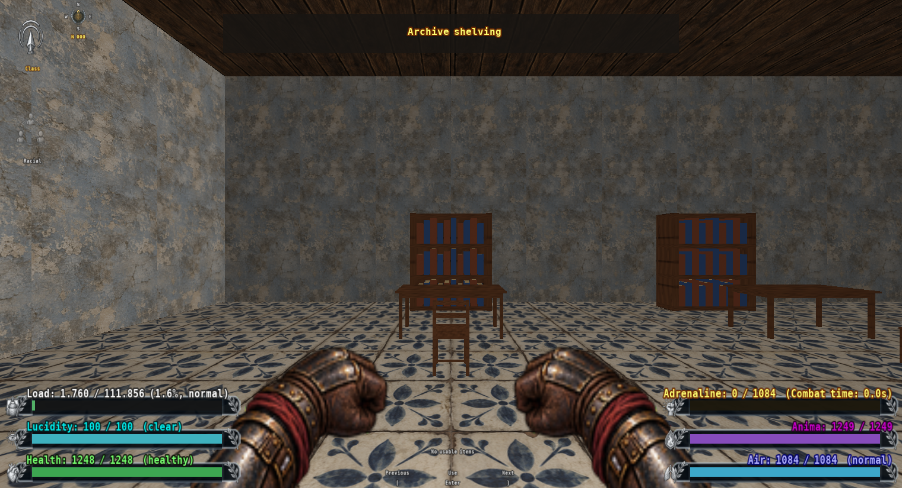
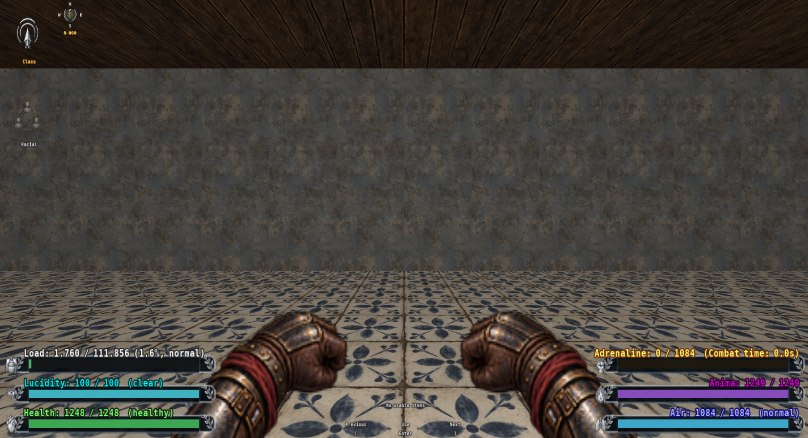
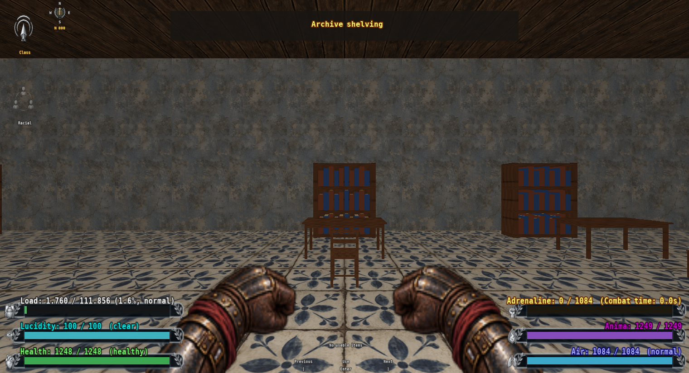
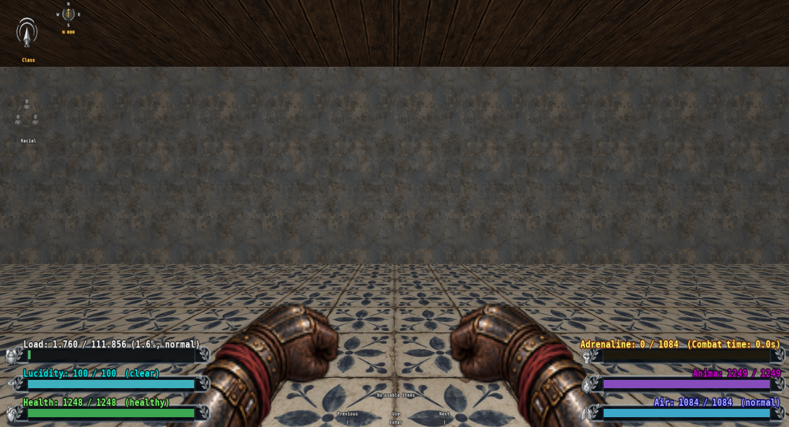
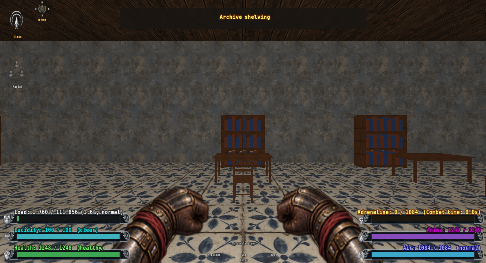
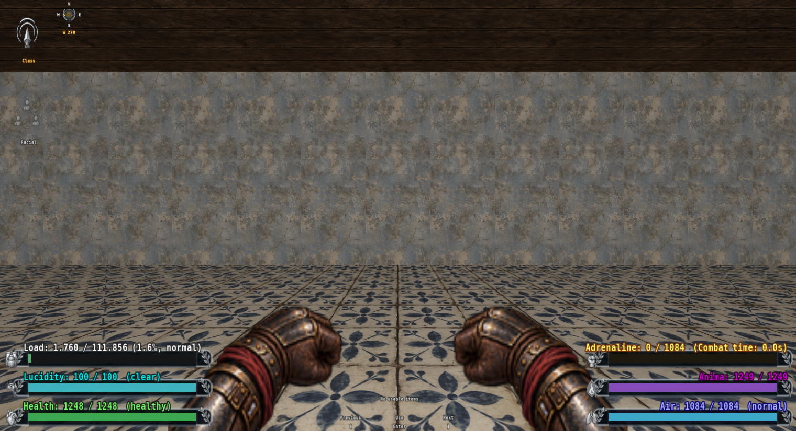
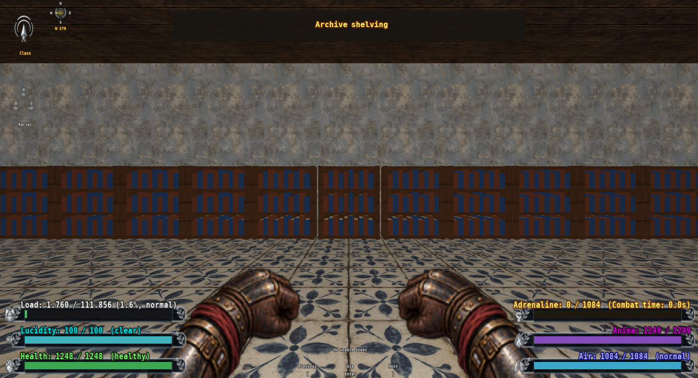
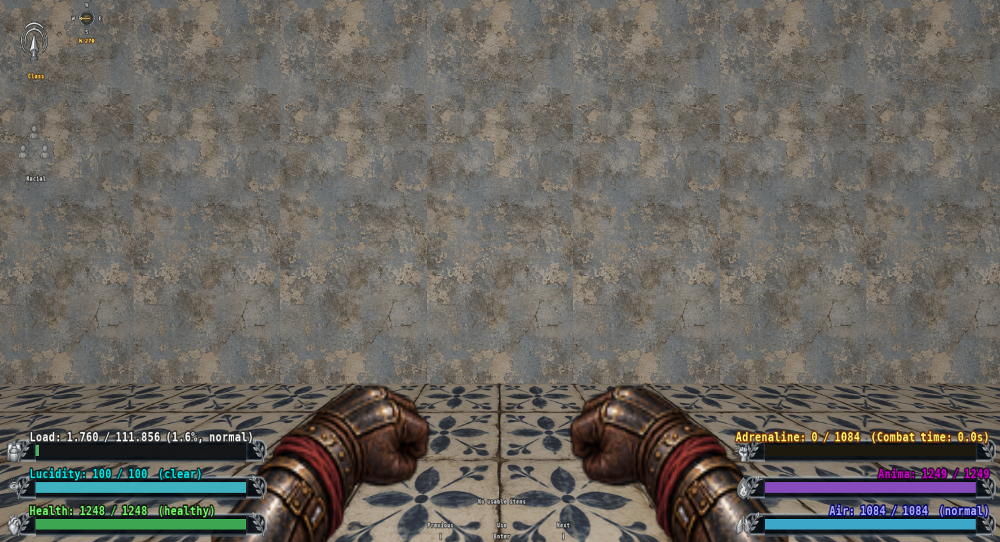
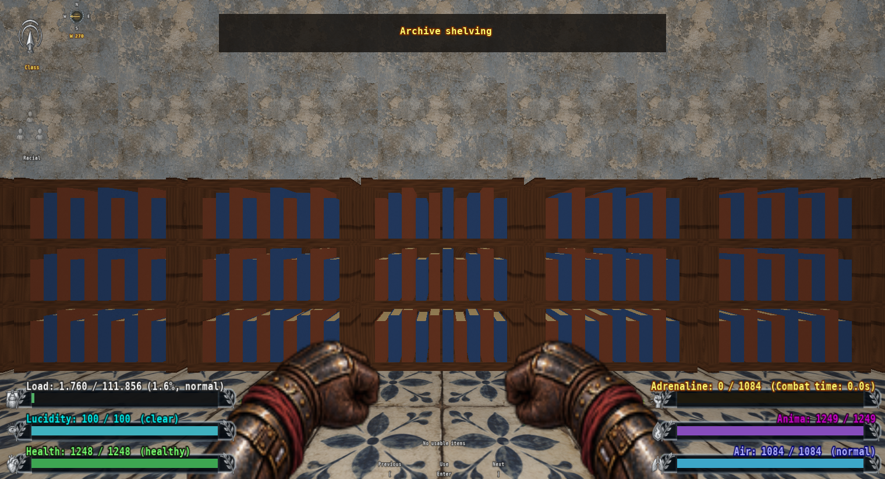
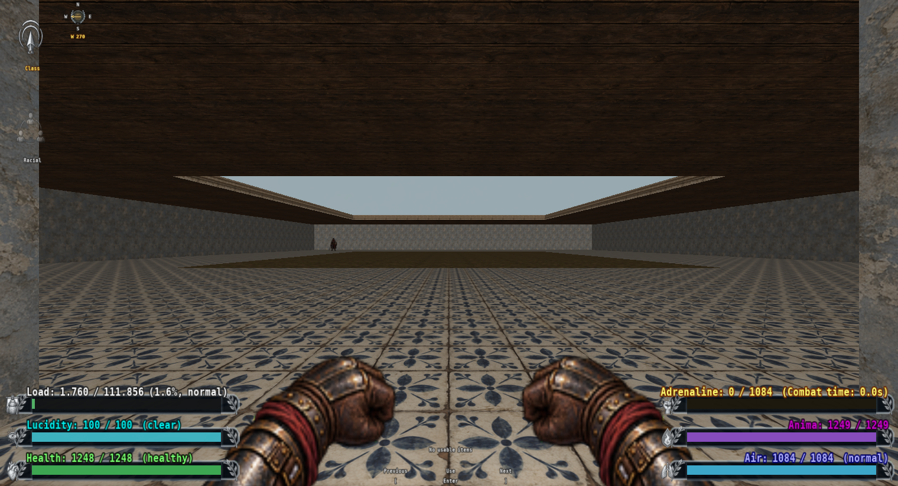
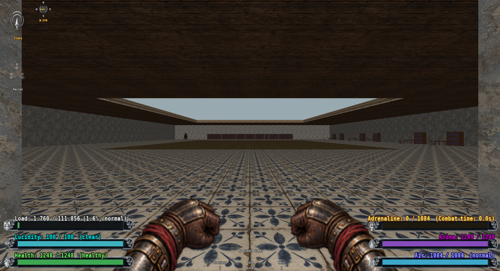